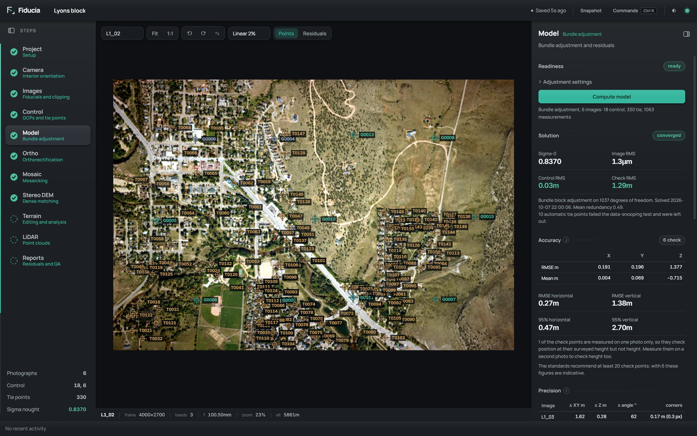
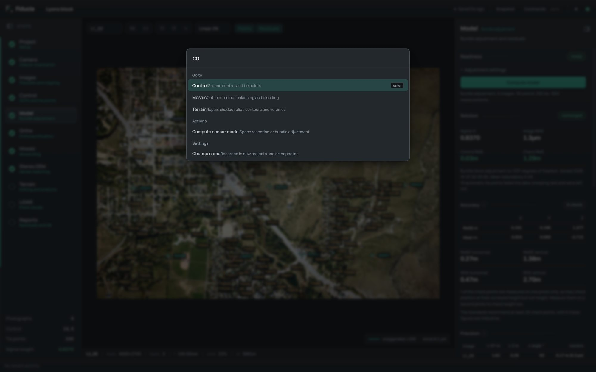
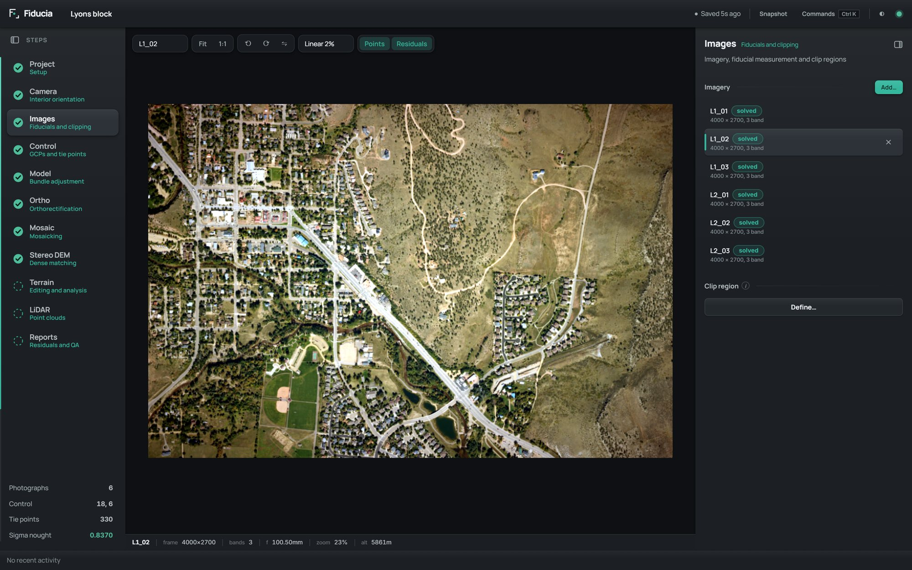
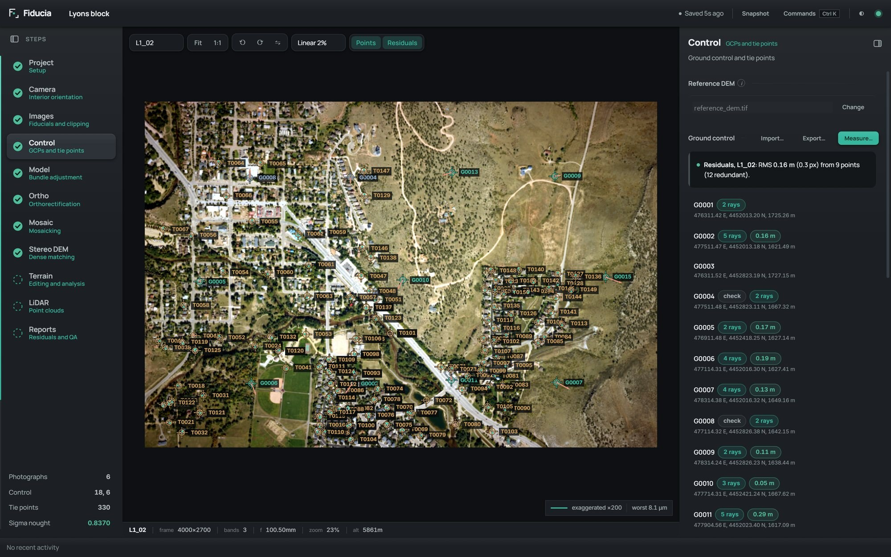
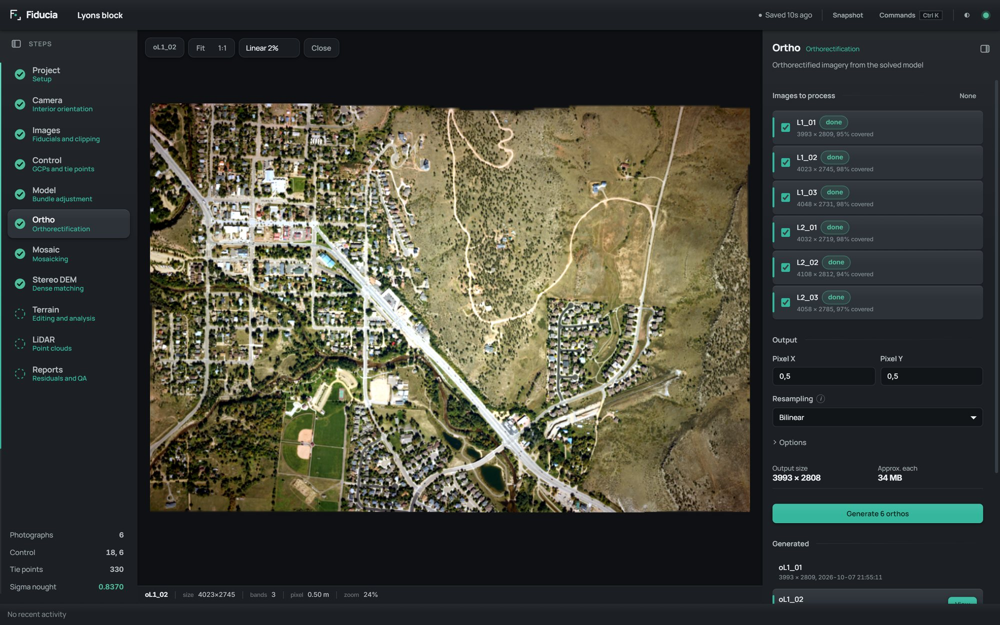
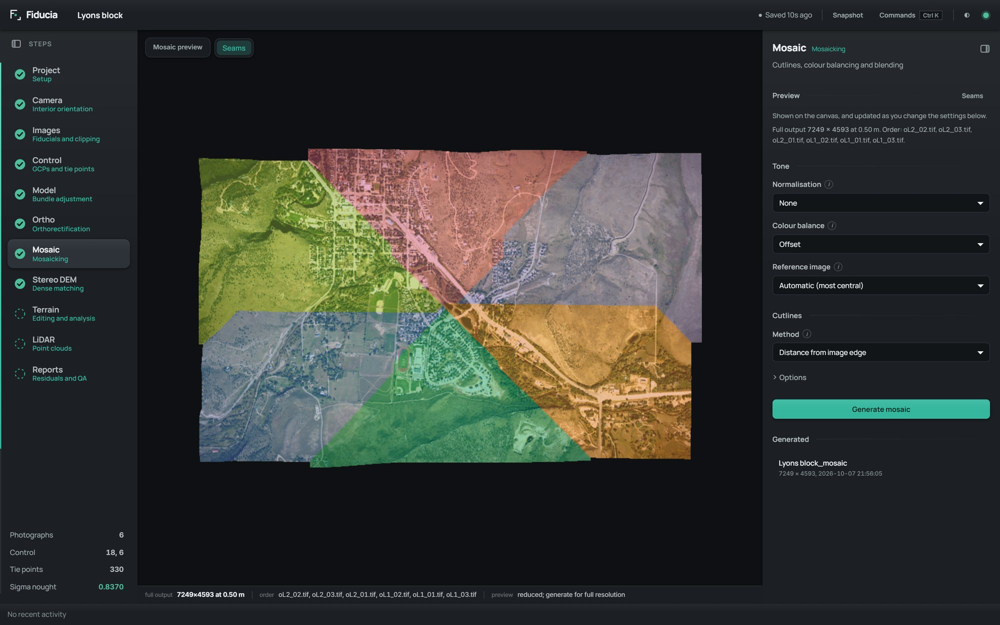
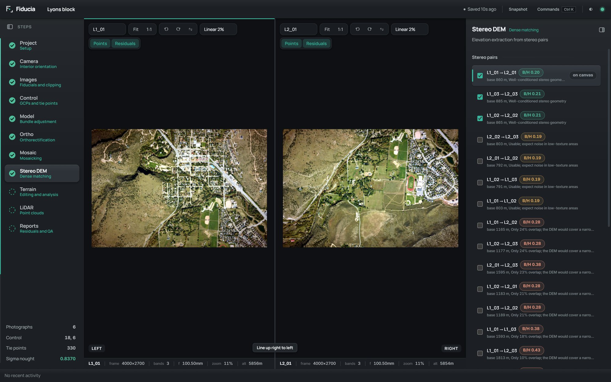
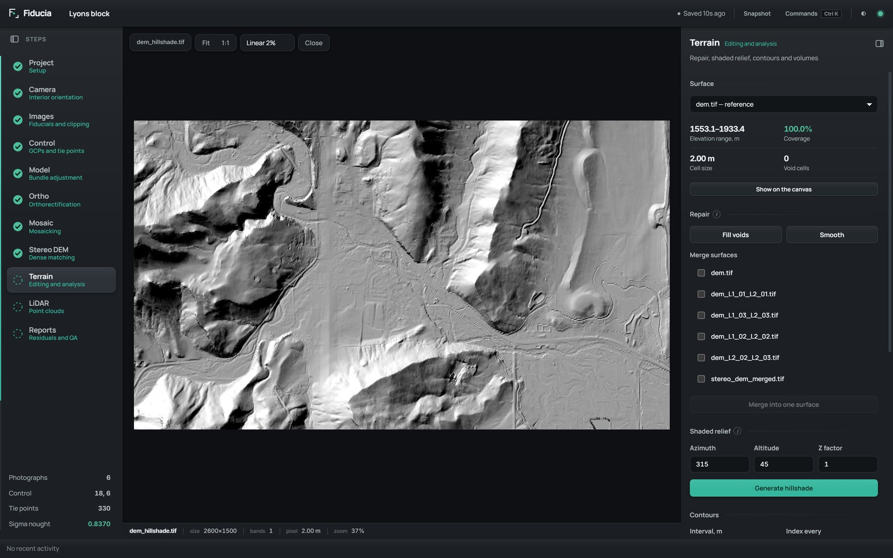

Fiducia user guide
Everything Fiducia does, step by step, with the settings behind each one and what to do when something doesn't go to plan. Search with /, or browse the contents.
Installing Fiducia
Fiducia runs on Windows 10 or 11, 64-bit. Download the installer from the download section and run it.
- No admin rights needed. It installs just for your user account, so it works on university and work computers.
- SmartScreen will ask first. The installer isn't code-signed yet, so Windows shows a warning on first run. Choose More info, then Run anyway.
- Shortcuts. You get a Start menu and a desktop shortcut, and you can choose the install folder.
- Check the download. Each release lists the installer's SHA-256. In PowerShell:
Get-FileHash .\Fiducia-Setup-0.1.0.exe -Algorithm SHA256
To remove Fiducia, use Settings → Apps in Windows like any other program. Your projects are separate folders and are never removed by uninstalling.
Your first project
The start screen offers New project, Open project and a list of recent projects. The first time you launch, a three-page introduction runs first; you can see it again from Settings → General or the command palette.
- Choose New project, type a Project name and Choose a folder. Fiducia shows the exact bundle path it will create before you commit.
- Answer What are you processing?: Drone photos, Scanned film photos, Satellite scenes or Everything. This decides which steps lead the rail, in what order and under what names. The other steps stay under More tools, and you can change the choice later on the Project step without losing any work.
- Choose Create project. A project is a folder ending in
.fidu; everything about it lives inside. - Work down the steps on the left, from Project to Reports. Each step shows whether it is ready, done or needs attention, so you can see the state of the whole block at a glance.
To open an existing project, choose Open project and select its
.fidu folder, or click it in Recent. Clicking the Fiducia logo in
the title bar closes the project and returns to the start screen.
For drone photos, see Drone photos: the setup is adding the photos and choosing Align photos.
A typical film block
Set the coordinate system and output pixel size, enter or read the camera calibration, add the photographs and measure their fiducials (film only), collect ground control and tie points, compute the bundle adjustment, then make orthophotos, a mosaic and elevation models from the solved block.
Drone photos
GPS-tagged photos from a drone need no calibration certificate, no ground control and no manual setup. Create the project with Drone photos, and the rail reads Project, Photos, Control (optional), Solve, Surface, Ortho, Mosaic, Terrain and Reports.
Aligning the photos
Add the JPEGs straight off the drone in the Photos step and choose Align photos. Fiducia then:
- Sets up the camera from the photos' own metadata: focal length, pixel size and image size. A 16:9 photo from a 4:3 sensor, as most drones and phones take, is recognised, so the pixel size is not overstated.
- Places every photo from its GPS position, in the UTM zone that position is in, with an output pixel twice the photos' ground resolution. Either can be changed on the Project step afterwards.
- Measures heading and flying height from how features move between neighbouring photos, where the photos don't record them.
- Matches tie points between each photo and its neighbours. Features are spread across every part of the frame, so roads and open ground are matched as well as busy texture such as trees, and each match is checked against the pair's geometry and depth.
The step then shows the number of tie points (and how many are on three or more photos), the flying height, the ground pixel and how many overlapping pairs matched. Photos placed by GPS carry a GPS tag until the block is solved.
Solving the block
Choose Compute model on the Solve step. Ground control is not needed: the block is held by the photos' GPS positions, each weighted as GPS deserves (3 m horizontally, 5 m vertically by default). The lens distortion and principal point are calibrated in the same solve, with the focal length held, because a block of photos looking straight down cannot tell focal length from flying height without control. Tie points that fail the outlier test are removed and the block solved again automatically.
The result has two parts. How well the photos fit one another is shown as the image RMS (well under a pixel on a good flight). How well the block is placed is stated in one note: it is only as good as the drone's GPS, typically metres. Ground control, if you add it on the Control step, ties it to your survey.
The dense surface
On the Surface step, Build dense surface matches every well-overlapping pair of photos pixel by pixel and fuses the results, keeping each height that at least two pairs agree on. Where none agree (moving trees, water, deep shadow) the surface made from the tie points fills in, so it has no holes. The search is bounded by the heights the tie points already found, which keeps it fast. Detail sets the resolution the photos are matched at (low, medium or high).
Every solve also makes a smoother surface from the tie points alone, so orthophotos can be made before the dense surface exists. Whichever is newer is used for orthophotos, unless you have set a DEM of your own. If the block is solved again, the dense surface is marked out of date.
True orthophotos
On a surface with trees and buildings in it, part of the ground is hidden from each photo: the road under an overhanging crown, the yard behind a wall. With Leave out ground each photo can't see on (the default for a drone block's own surface), each orthophoto records which of its pixels are hidden, and the mosaic takes that ground from a photo that does see it. Only where no photo sees it is the hidden pixel used, so the mosaic never has holes. Drone mosaics default to seams that follow where the photos agree, with a narrow blend, so trees don't ghost.
Getting good results
- Fly with plenty of overlap: about 75% forward and 65% between strips.
- Photos looking straight down suit Fiducia best.
- Wind moves leaves between photos, so dense forest canopy is the hardest thing to match; open ground, roads, buildings and single trees come out well.
- For survey accuracy, add ground control or check points: GPS-only blocks are placed to the accuracy of the drone's GPS.
The workspace

- Title bar. The project name and folder, the save indicator (Saved, Saving…, or Not saving if the disk refuses writes), Snapshot, Commands, the light and dark theme switch, and the engine light. Hover the light to see whether the processing engine is running and how many jobs are in progress.
- Step rail. The steps of your workflow in working order, with the rest under More tools. An empty ring is locked (it needs earlier steps), a dashed ring is ready, an amber ring needs attention and a filled green tick is done. Underneath, readouts show the photographs, control, tie points and sigma nought of the current solution. Hide the rail with Ctrl B.
- Canvas. One persistent viewer. The photograph stays put while the step changes what is drawn on it. Generated orthos, mosaics and DEMs open here too.
- Panel. The settings and results for the current step. Hide it with Ctrl \ for more room.
- Activity bar. Background jobs with progress and a cancel button. When a job finishes, its View button jumps straight to the result.
Small i marks next to settings explain what they do and when to change them. Hover or click them; Esc closes them.
Keyboard and mouse
| Keys | What it does |
|---|---|
| Ctrl K | Command palette: go to any step, image or action by name |
| Alt 1 … 9 | Jump to step 1 to 9 (Project to Terrain) |
| Ctrl B | Show or hide the step rail |
| Ctrl \ | Show or hide the step panel |
| ↑ ↓ Enter | Move through and run commands in the palette |
| Esc | Close the palette, Settings, an info tip, or the new project form |
| Mouse wheel | Zoom the canvas about the cursor, so the feature under the pointer stays put |
| Left drag | Pan the canvas (unless you are placing a point) |
| Middle drag | Always pans, even while placing a point |

The palette also has Compute sensor model, Take a snapshot, Relink offline images, Project report, Close project, the theme switch, Show introduction, Settings and Change name.
Saving, snapshots and recovery
There is no Save button, because there is nothing to forget. Every edit is written to the project's journal on disk the moment you make it, before Fiducia acknowledges it. If the computer crashes or loses power, the journal is replayed the next time you open the project and nothing is lost.
- Snapshots are named restore points. Take one from the title bar, the palette, or Project → History → Snapshot now before any change you may want to undo in bulk.
- Restoring a snapshot saves the current state as a snapshot first, so a restore can always be undone.
- Removable drives. If the drive holding the project disappears mid-edit (a USB stick pulled out, a network share dropping), Fiducia refuses the edit, tells you which drive went, and carries on saving by itself when it comes back.
- Moved photographs. Image paths are stored relative to the project. If photos are moved, the Images step marks them offline; Search known folders finds them again, or Locate… points to one by hand.
- Handing a project on. Project → Handover → Archive project… writes a zip with the project, its journal and snapshots. Generated outputs are left out, and image links stay valid on another computer.
Project
The settings that apply to the whole block: what kind of imagery it is, where it is on the earth, and the output grid.
Identity
Name, Author and Description are stored in the project file. Orthophotos record the name of whoever generates them, which you set once under Settings → Profile.
Processing
What the project is for. It sets the math model and which steps lead the rail; changing it keeps everything already done.
| Option | Use it for |
|---|---|
| Drone photos | GPS-tagged photos from a drone; see Drone photos |
| Scanned film photos | Film frames with fiducial marks and a calibration certificate |
| Satellite scenes | Scenes delivered with RPCs, refined with control (see Scripting the engine) |
| Everything | Every step in the classic order, with a free choice of math model, including digital frame cameras described by pixel size and dimensions |
Projection
- Output projection is the coordinate system of every product. Pick from the list or type an EPSG code. Fiducia shows the EPSG code, datum and units underneath, and writes the full definition into every output, so GIS software places it correctly even for systems without an official code.
- GCP projection is the system your control is surveyed in. It follows the output projection automatically; set it separately only if your survey is in a different system. match output puts it back.
- Pixel spacing X and Y set the output ground resolution in metres (0.5 m by default).
- Elevation reference is mean sea level or the ellipsoid, to match your control heights and DEM.
See Coordinate systems for the South African Lo zones.
History and Handover
Snapshots and the project archive, described in Saving, snapshots and recovery.
Camera
The interior orientation: how the camera turns a direction into a point on the image.
Reading a calibration certificate
Calibration certificate → Read… takes a PDF, PNG or JPEG of the certificate and extracts the focal length, principal point, fiducial positions and distortion table. Every value is shown next to the text it came from, so you can check it before choosing to apply it, and the distortion table is fitted straight away so a misread figure stands out.
- Offline (the default): Windows' built-in text recognition and a set of rules for certificate layouts. Nothing leaves your computer.
- Claude or ChatGPT, with your own API key, for difficult scans. Only the certificate you choose is sent. Set this up under Reading service (Settings → Certificate reading); keys are encrypted by Windows and kept on your computer.
Entering it by hand
- Name and Focal length in millimetres.
- Principal point offset. Enter PPO x and y directly, or switch to PPA + PPS, type both from the certificate and choose Set PPO from PPA + PPS. Fiducia does the addition for you.
- Radial lens distortion, Δr = K₀r + K₁r³ + K₂r⁵ + K₃r⁷. Type K₀ to K₃, or choose From table…, enter the certificate's radius (mm) and distortion (µm) pairs and Fit K₀–K₃. The fit RMS and worst residual are shown: under 1 µm is good, over 3 µm usually means a typing error.
Film cameras
- Calibrated fiducials: the positions of up to eight marks in millimetres, with their layout (Edge and corner, Corner only or Edge only). At least four are needed.
- Transformation from scan pixels to film millimetres: Affine (six parameters, absorbs a scanner's differing x and y scale and skew; needs four marks), Conformal (four parameters, keeps the shape) or Automatic (affine whenever four or more marks are measured).
- Image scale 1 : the nominal photo scale, used to estimate the starting flying height.
Digital cameras
Pixel pitch (mm), Columns and Rows, and the principal point offset as Long-track (along the flight direction, not the long side of the image) and Cross-track.
Camera library and corrections
- Save to library… / Load from library… keeps calibrated cameras in a JSON file for reuse in later projects.
- Atmospheric refraction and Earth curvature. At the frame corners curvature displaces points by about 13 µm at 1,500 m and 36 µm at 4,000 m; refraction is about a third of that. Both are applied in the adjustment and orthorectification (not yet in stereo DEM extraction or automatic control).
Images

Adding photographs
Add… takes GeoTIFF, JPEG and PCIDSK (.pix) files. Each row shows
the size and bands, the interior orientation residual for film (a green chip under 2 px), and a
solved chip once the model has placed it. ⧉ opens a photo in its own
window (Pop out all does every photo at once) and ✕ removes it with its
measurements.
Interior orientation (film)
- Click a mark in the grid (TL, TM, TR …), then click that fiducial on the photo. The fit and each mark's residual update after every click.
- Once one photo has three or more marks, Detect all finds them on the others, using your measured photo as the template.
- Check the proposals and choose Apply; only photos with at least three confident marks are applied.
An RMS under 2 px is green. Clear all marks starts the photo again.
Clip region
Define…, then click two opposite corners on the photo, to keep frame edges, data strips or the aircraft out of the products. It only limits the output; points outside it stay in the adjustment.
Control

Reference DEM
Choose a DEM… (GeoTIFF, .pix, .img or .asc). It supplies control heights and removes terrain displacement in the orthophotos.
Measuring ground control by hand
- Select a photo, then choose Measure…. While you aim, a magnifier shows the photo at 1:1 with a crosshair on the pixel the click will record.
- Click the feature. The pending point is drawn on the photo before you accept it.
- Type its coordinates. The boxes are named for your projection (easting and northing, or westing and southing on the Lo zones). A pair or triple pasted into one box is split across the boxes for you, and decimal commas are understood.
- Use Extract Z from DEM for the height if you have no surveyed one, tick Check point to keep it out of the solution, then Accept.
If the two horizontal coordinates look reversed (for example the point only falls inside the DEM when they are swapped), Fiducia says so and offers Swap or Keep as entered.
Each point's row has +ray (measure it on the current photo as well), ⊘ / ↺ (make it a check point, or use it again) and ✕. Chips show how many photos it is measured on and its residual on the current photo.
Importing a survey file
Import… reads CSV and text tables (.csv, .txt,
.dat, .asc). Columns are recognised by the names surveyors actually use
(point, station, beacon; easting, northing; elevation, height; precision and so on), and you see how
many points were read and which rows could not be before anything is imported. A precision column
sets that point's weight. Export… writes the control to CSV, with residuals once
the block is solved.
Automatic control
Choose a geocoded reference image (an existing orthophoto or orthomosaic; select every tile and they are searched as one), then Find control. Each photo is placed on the reference automatically, patches are rectified and matched, and proposals are listed with their score and shift. Untick any you don't trust and Accept the rest.
- Options: target count per photo (20), search radius in metres (90) and minimum score (0.55).
- After computing the model, run it again for more precise points; they replace the first pass.
- Measure … control points on all photos appears when automatic points are only on one photo. Measured on every photo that sees them, they tie the photos together and check height as well as position.
Tie points
Collect tie points runs in the background across all overlapping photos. Candidates are found on reduced images, checked with a RANSAC two-view geometry test, then measured again at full resolution. A feature seen on three or more photos becomes one multi-ray point.
| Option | Choices |
|---|---|
| Matching method | Normalised cross-correlation for imagery flown in one session, or Feature-based (AKAZE), which copes with scale and rotation for mixed orientations |
| Target per photo pair | 60 by default |
| Min score | 0.75 by default |
| Full-resolution refinement | Least-squares matching (about a tenth of a pixel, with a precision for every point), Correlation only (about a third of a pixel) or None (fastest) |
| Replace earlier automatic tie points | On by default |
Model
The bundle adjustment: every photo's position and attitude, and every tie point, solved together. With one photo it is a space resection.
Readiness
Before you run anything, Fiducia lists exactly what is missing (blockers) and what looks doubtful (warnings). Where it can, it offers a one-click fix, for example a camera described in landscape for portrait images. When everything is in place the chip says ready and Compute model becomes available.
Adjustment settings
A-priori standard deviations. With realistic values, sigma-0 comes out near 1.
| Setting | Default | Notes |
|---|---|---|
| Control, horizontal | 0.5 m | A precision column in the survey file overrides it per point |
| Control, vertical | as horizontal | Heights read from a DEM are usually poorer than positions |
| Control measurements | 0.5 px | A point clicked on the photo |
| Tie point measurements | 0.3 px | Least-squares matching reaches 0.1 to 0.3 px |
| Self-calibration | None | See below |
| Robust estimation | On | Limits the pull of gross errors so they stand out; statistics are those of ordinary least squares at the solution |
| Remove tie points that fail data snooping | On | Automatic tie points with a standardised residual over 3.29 are removed and the block solved again. Control is only ever flagged |
Self-calibration estimates corrections to the camera alongside the orientations: Interior (f, x₀, y₀), Interior and radial (+ k1, k2), Brown (+ k3, p1, p2) or Brown and affinity (+ b1, b2). Brown, focal length held is the drone default: everything but the focal length, which a nadir block without control cannot separate from flying height. Drone blocks also allow the looser limits a consumer lens needs. Self-calibration needs strong geometry: many well-spread tie points, control in height and ideally several strips. On a single short strip, leave it off.
If photos have imported camera positions, you can use them as observations with their own precisions, and solve a constant GNSS shift for a datum or antenna offset common to the whole flight (this needs some ground control).
Reading the solution
- Sigma-0: the variance factor. Near 1 means the stated precisions were right; well above 1 means the data is worse than you said (or something is wrong).
- Image RMS in µm, Control RMS and Check RMS in metres.
- Accuracy (when there are check points): RMSE in X, Y and Z, the mean error per axis (a mean far from zero is a systematic offset), RMSE horizontal and vertical as in the ASPRS Positional Accuracy Standards (2023), and 95% confidence as in the NSSDA (1.7308 × RMSEr, 1.96 × RMSEz). The standards recommend at least 20 check points.
- Self-calibration: each estimated parameter with its standard deviation, marked significant only if it is larger than three of them.
- Precision: one standard deviation of each photo's position (± XY, ± Z), attitude (± angle, in arc seconds) and the ground uncertainty at its corners, which the orthophoto inherits. Corners over 5 px are highlighted and point to too little or badly spread control.
- Probable blunders: points failing data snooping, worst first, with their standardised residual and a plain explanation. For a control point, Exclude and re-solve turns it into a check point and solves again.
- Residuals: a sortable table in ground units or pixels, for all points or only control, check or tie points. Values over 2 m or 1 px are highlighted. Hover a row to find the point on the photo.
Ortho

Every photo with a solved orientation is rectified onto the reference DEM and one shared pixel grid, across every processor core. Tick the photos to process and choose Generate.
- Pixel X / Y: the output resolution (the same as the project's pixel spacing).
- Resampling: Nearest neighbour keeps original values (use it for classified data), Bilinear suits most photography, Cubic is sharper but slower and can overshoot at hard edges.
- Format: GeoTIFF, Cloud-Optimised GeoTIFF, PCIDSK (
.pix), ERDAS Imagine (.img) or lossless JPEG 2000. Every format keeps the coordinate system and overviews. - Compression: Deflate or LZW (lossless), JPEG (lossy, several times smaller, with a quality slider) or none. With JPEG the background is stored as a transparency mask.
- Background value: written outside the photograph and recorded as NoData.
- Keep image values off the background: moves image pixels that happen to equal the background one step away, so dark water and shadow don't show as holes in GIS software.
- Leave out ground each photo can't see: marks the ground hidden behind trees and buildings, so the mosaic takes it from a photo that sees it (see True orthophotos). It needs a surface with trees and buildings in it; on by default for a drone block's own surface, off for a bare-earth DEM.
The output size and approximate file size are shown before you start. Without a DEM, Fiducia warns that terrain displacement won't be corrected. Generated orthos are listed with View (open on the canvas), ⧉ (open in its own window) and ↗ (show in folder).
Mosaic

With two or more orthos, a preview appears on the canvas and updates about a second after each change, so you can compare settings directly. Seams colours each part by the photo it comes from.
Tone
- Normalisation evens out brightness within each photo first: Across image fits a smooth trend surface for the darkening towards the edges, and Hotspot also follows broader patches such as the bright area opposite the sun.
- Colour balance makes overlapping photos agree: Offset matches their levels, Gain and offset their contrast too, and Histogram matching maps each photo's whole distribution onto the ones before it.
- Reference image anchors the balancing. Automatic picks the most central photo; avoid frames with saturated water or cloud.
Cutlines
- Least difference between images routes seams along roads and open ground and around buildings and trees, whose lean differs between photos.
- Distance from image edge, Nearest centre and Image order are simpler geometric choices.
- Blend width (0 to 200 px, 40 by default) softens seams; too wide blurs detail across them.
Choose Generate mosaic for the full-resolution result.
Stereo DEM

Fiducia lists every overlapping pair with its base-to-height ratio (B/H) and a plain verdict, because B/H predicts DEM quality better than any other single number. Good pairs are ticked for you. Click a pair to show it side by side; Line up moves one view to the ground at the centre of the other, at the same scale.
| Setting | Choices |
|---|---|
| Method | Semi-global matching (smooth along several paths, better on low texture) or Normalised cross-correlation (faster, noisier in shadow and over water) |
| Detail | Low (2,000 px), Medium (3,000), High (4,000) or Extra high (8,000), the long side the photos are matched at. Height precision follows the matched pixel size; extra high takes about ten times as long as high |
| Terrain | Flat, Rolling or Mountainous |
| Smoothing | None, Low, Medium or High |
| Pixel sampling | 1 to 16 (4 by default) |
| Wallis filter | Recovers texture in shadow and over water, at the cost of some noise elsewhere |
| Min / max elevation | Automatic, or limits you set |
Extract resamples each pair to epipolar geometry, matches it, triangulates every match in 3D from the adjusted cameras, then levels and merges the pair surfaces into one. Results are listed with their resolution and coverage, the merged surface first.
In a drone project this step is called Surface and leads with Build dense surface, which does all of this for the whole block in one go; see The dense surface. The pair list stays below it for working pair by pair.
Terrain

Everything that happens to an elevation model after it is made. Choose a Surface (the reference DEM, a stereo or merged DEM, or a LiDAR raster) to see its elevation range, coverage, cell size and void cells, and Show on the canvas.
- Fill voids fills gaps next to measured ground; large voids such as open water are left alone. Smooth is a median filter that removes spikes and keeps breaklines.
- Merge surfaces joins two or more surfaces with feathered edges.
- Shaded relief with your sun azimuth (315°), altitude (45°) and Z factor. A low sun reveals matching blunders that a colour ramp hides.
- Contours at your interval with an index contour every n lines, written as GeoJSON. The approximate number of contours is shown before you run it.
- Filter to terrain model removes vegetation and buildings with a progressive morphological filter. Check the result on a hillshade; flat roofs and terraces can be misclassified.
- Volume against a base surface: cut, fill and net volume in m³, and the area compared.
Filled, smoothed and merged surfaces join the Surface list. Hillshades and contours are listed under Generated, with View (hillshades open on the canvas), ⧉ and ↗ (show in folder).
LiDAR
Open… a LAS or LAZ point cloud to see its point count, average spacing, elevation range and LAS version. If no coordinate system is declared, the project's output projection is assumed.
- Classification filter. Every class is listed with its share of the points before you choose, because "my DTM has holes" is almost always "ground was only a few percent of the returns". Ground (class 2) alone makes a terrain model; add vegetation and buildings for a surface model.
- Rasterising: cell size (1 m by default; the average spacing is shown beside it) and returns (all, first, last or single only). Options: cell assignment (inverse distance, mean, minimum or maximum) and void fill (natural neighbour, linear, nearest or none).
- Validate compares a result with a reference surface: RMSE, R², mean error, sample count and the regression line.
LiDAR surfaces appear in the Terrain step for repair, hillshades, contours and volumes.
Reports
- Layout. Standard is sectioned, with model statistics and blunder detection. Classic text layout reproduces the established fixed-column format, column for column, so existing marking templates and parsing scripts keep working.
- Project report. Choose the sections (all ticked by default: project and math model, camera calibration, projection, images, fiducial measurements, exterior orientation, ground control, tie points, model statistics, outputs) and which images to include.
- Residual report. In ground units or pixels, for all points or only control, check or tie points. In the classic layout the DS columns are standardised residuals; values above about 3 deserve a look.
- Preview shows the report in the panel with Copy to clipboard; Save as .txt… writes it to a file.
The image viewer
The toolbar above the canvas:
- Fit shows the whole photo; 1:1 shows one photo pixel on one screen pixel, the sharpest view for measuring.
- Rotate left or right and mirror. These change the display only, never the data.
- Stretch: no stretch, linear, linear 2%, 2 standard deviations, equalise or root. Also display only.
- Points shows measured points and marks; Residuals draws each point's residual vector once the model is solved.
- ⧉ opens the photo in its own window.
The strip under the canvas shows the photo's size, bands, focal length, scale, zoom and the approximate flying height. Tiles are loaded from an image pyramid, so very large scans pan and zoom smoothly.
Multiple monitors and outputs
Any photo, orthophoto, mosaic or DEM can be popped out into its own window and dragged to a second screen. Measuring works in every window: a point is recorded on the photo you click, whichever is selected in the main window.
Generated outputs open on the canvas with the same pan and zoom as photos. Single-band elevation is coloured by height; imagery is shown as it is, with a choice of display stretch. When a job finishes, its View button in the activity bar takes you to the result.
Settings
Settings belong to you and this computer; project settings live in the Project step. Open them from Project → Settings… or the command palette.
- Profile. Your name, shown on the start screen and recorded as the author of new projects and orthophotos.
- Certificate reading. Offline, Claude or ChatGPT, the model, and your API key.
- Measuring. The magnifier when placing control points: while you are zoomed out beyond 1:1, a round window follows the cursor at 1:1 with a crosshair on the pixel the click will record.
- Appearance. Dark or light. Dark is the default because a bright surround distorts how you judge tone in a photograph.
- General. Clear the recent projects list (no files are deleted) and show the introduction again.
Coordinate systems
Any system with an EPSG code can be used for control, outputs and DEMs, and they can all be different; Fiducia transforms between them.
The South African Lo zones (Gauss Conform, Lo15 to Lo33) are first-class. Older
packages still ship them on the Cape datum, which has been wrong for every project since the switch to
Hartebeesthoek94 in 1999. Here ZALO19 is Hartebeesthoek94; ZALO19_WGS84
and ZALO19_CAPE are separate, clearly labelled entries. The zones are south-oriented, so
coordinates are westings and southings and are not mirrored, and the control boxes are labelled that way.
File formats
| What | Reads | Writes |
|---|---|---|
| Photographs | GeoTIFF, JPEG, PCIDSK .pix | (never modified) |
| Orthos and mosaics | GeoTIFF, .pix, .img, JPEG, VRT (as references) | GeoTIFF, Cloud-Optimised GeoTIFF, PCIDSK, ERDAS Imagine, JPEG 2000 |
| Elevation | GeoTIFF, .pix, .img, .asc | GeoTIFF |
| Point clouds | LAS, LAZ | (rasterised to GeoTIFF) |
| Control | CSV and text tables | CSV, GeoJSON |
| Contours | GeoJSON | |
| Certificates | PDF, PNG, JPEG | |
| Camera library | JSON | JSON |
| Reports | Plain text | |
| Projects | .fidu folder | .fidu folder, zip archive |
Inside a .fidu folder: project.json (the state), journal/ (the
write-ahead log), snapshots/, cache/ (overviews) and outputs/
(orthos, mosaics, DEMs).
Scripting the engine
Everything the interface does is a plain HTTP call to the processing engine, so blocks can be processed in batches without opening a window. Running from source:
python engine/server.py --port 8731A few examples:
curl -X POST localhost:8731/project/open -H "Content-Type: application/json" \
-d '{"directory": "D:/survey/Block_A.fidu"}'
curl -X POST localhost:8731/model/compute -H "Content-Type: application/json" -d '{}'
curl localhost:8731/jobs?activeOnly=true
Long operations return a job, which you poll at /jobs. A few things are, for now, only
available here and not yet in the interface:
- Flight logs.
/exchange/exterior/importreads one GNSS/IMU orientation per photo (with omega, phi, kappa or roll, pitch, heading columns), and/exchange/exterior/exportwrites the solved orientations. - Footprints.
/exchange/footprintswrites every photo's ground footprint as a GeoJSON layer. - Satellite RPCs.
/satellite/rpcreads a scene's rational polynomial coefficients and/satellite/refinerefines them with ground control.
How accuracy is stated
Accuracy comes only from independent check points. Control points are part of the solution, so they measure how well it fits, not how accurate it is.
- RMSE per axis, and horizontal and vertical, as in the ASPRS Positional Accuracy Standards for Digital Geospatial Data (2023).
- Accuracy at 95% confidence as in the NSSDA: 1.7308 × RMSEr horizontally and 1.96 × RMSEz vertically.
- The mean error per axis, so a systematic offset can't hide inside an RMSE.
- A check point measured on only one photo checks position at its surveyed height, not height. Fiducia says how many are like that.
- With fewer than 20 check points the figures are marked as indicative, as the standards recommend.
Every precision Fiducia reports is a standard deviation from the adjustment's covariance, scaled by sigma-0, and it has been checked against Monte Carlo simulation (below).
Testing and results
Most tests build a scene whose answer is known exactly and check that Fiducia recovers it. Others compare it with independent references: an established commercial package's solution of a real block, a ray tracer through the standard atmosphere, and a spherical earth.
- Against a reference solution on a real block, every photo's orientation agrees within 1.2 of its standard deviations, and every tie point within 3 (median 0.12).
- Precisions are true. Over 150 Monte Carlo solves the actual scatter matches the reported precision to within 0.89 to 1.14, and sigma-0 averages 0.99.
- Self-calibration recovers camera errors injected into a block within their reported standard deviations; an uncorrected camera gave σ₀ 3.0 and 5.05 m at the check points, corrected to 1.00 and 0.31 m.
- Blunders: a 12-pixel tie point error is removed automatically and a 4 m control height error is flagged first and named.
- Least-squares matching reaches 0.04 px, with each point's reported precision within 2% of its actual error.
- Space resection recovers a known orientation to 10⁻¹¹ degrees at every heading.
- Refraction matches ray tracing through the International Standard Atmosphere to 0.02%; earth curvature on a true sphere is recovered to 0.4 mm.
- Orthorectification correlates 0.9946 with the true ground; mosaicking 0.9925 with no hard seams.
- Terrain: volume against an analytic cone exact to 0.00%, hillshade within 0.3% of analytic illumination, contours of a cone within 1.5% of the true radius, and bare-earth filtering leaves open ground within 3 mm.
- A synthetic drone block (consumer lens, half-pixel measurement noise, GPS only, no control) comes back with the ground's shape within 1.7 cm horizontally and 2.3 cm vertically, about one ground pixel, and the lens distortion within 0.2 px of up to 117 px. Placement is within the GPS's reach, as it must be without control.
- A real drone flight (18 photos, public sample data) solves to 0.73 px RMS with σ₀ 0.87, and its dense surface agrees with an independent open-source reconstruction of the same flight to a median 0.09 m (87% within 0.5 m), once the GPS offset between the two is removed.
- Speed: a 300-photo, 44,000-point block solves in under two minutes.
- Crash recovery replays unsaved edits from the journal, and pulling the project drive mid-session loses nothing.
Known limitations
Where its edges are, so you can plan around them:
- Refraction and earth curvature are applied in the adjustment and orthophotos, but not yet in stereo DEM extraction or automatic control.
- The height scale factor of map coordinates (about 24 ppm at 150 m) is not modelled.
- Dense matching of forest canopy is limited by wind moving the leaves between photos; the surface there comes from the tie points.
- Drone alignment expects photos that look roughly straight down; oblique sets are not yet supported.
- Stereo DEM, LiDAR and satellite RPCs have had less real-data use than the core chain from camera to mosaic.
.pixoutput is lightly tested.- Windows only, and the installer isn't signed yet.
Troubleshooting
Compute model is greyed out
The Readiness list in the Model step names what is missing: usually fewer than three control points, a photo without enough measurements, or a camera that contradicts its images. Apply the offered fix or add what it asks for.
Residuals of kilometres
Almost always a coordinate pair typed or imported the wrong way round, or control in a different system from the one set as the GCP projection. Check the Project step's projections, and look for Fiducia's swap warning when you enter points.
Sigma-0 is far from 1
Well above 1: the measurements are worse than the a-priori precisions say, or there is a blunder. Look at Probable blunders first. Well below 1: the precisions are too pessimistic; tighten them in Adjustment settings.
Photos say offline
They have moved. Choose Search known folders in the Images step, or Locate… on the photo to point at it by hand.
Fiducial detection misses marks
Measure all the marks on one photo by hand first. Detect all then uses that photo as its template instead of a generated cross.
Holes in the orthophoto over water or shadow
Turn on Keep image values off the background in the Ortho options, so real black pixels are no longer mistaken for NoData.
Seams show in the mosaic
Try Across image normalisation, Histogram matching, Least difference cutlines and a wider blend, and pick a reference image without water or cloud.
The DEM has holes
Use Fill voids in the Terrain step for small gaps. For stereo, try the Wallis filter over low texture. For LiDAR, check how much of the cloud is ground before rasterising.
Not saving
The title bar shows Not saving when the project's drive refuses writes, for example a removed USB stick or a full disk. Your last edit is rolled back and named; saving resumes by itself when the drive is back.
Engine starting or reconnecting
The interface talks to a processing engine in the background. It reconnects on its own; if it doesn't within a minute, restart Fiducia.
Frequently asked questions
Is Fiducia free?
Yes. It's free to use and open source under the Apache 2.0 licence.
Does it upload my data?
No. Everything stays on your computer. The only network use is optional: reading a certificate with Claude or ChatGPT using your own key.
Can I use my existing data?
Yes. Photos, DEMs and orthos in GeoTIFF, .pix and .img open directly, control comes in from survey tables, and the classic report layout matches the established fixed-column format. Projects from other software aren't imported; you set the block up again in Fiducia from the same files.
Does it do drone imagery?
Yes. GPS-tagged drone photos are aligned, solved, given a dense surface and turned into true orthophotos and mosaics without a calibration certificate or ground control; see Drone photos. Oblique sets are not yet supported.
How do I report a problem?
Get in touch on LinkedIn, or open an issue on the releases page. A project archive (Project → Archive project…) helps me reproduce it.
Release notes
Since 0.1.0
In the next release.
- Drone photos: aligned from their own GPS, solved without ground control, dense surfaces from overlapping pairs, and true orthophotos that leave out hidden ground.
- New projects ask what you are processing, and the rail shows that workflow's steps; the rest are under More tools.
- A much faster bundle adjustment for large blocks: hundreds of photos in minutes.
0.1.0, 6 October 2026
The first public build.
- The full chain from project to reports: interior orientation, ground control (by hand, imported or automatic), least-squares tie points, bundle adjustment, orthos, mosaics, stereo DEMs, terrain, LiDAR and reports.
- Bundle adjustment with robust estimation, data snooping, self-calibration, GNSS/IMU observations and accuracy statements to ASPRS 2023 and NSSDA.
- Calibration certificates read offline, or with Claude or ChatGPT using your own key.
- Outputs open on the canvas or in their own windows; the mosaic preview fills the canvas.
- Continuous autosave, snapshots and recovery from a removed drive.
Licence
Fiducia is open source under the Apache License 2.0. Copyright 2026 Joshua Metcalf. You may use, modify and share it, including commercially, provided the licence and notices are kept. Apache 2.0 was chosen over MIT for its explicit patent grant.
The photogrammetric models are my own implementation from published literature. Fiducia builds on established open-source libraries, including NumPy, SciPy, OpenCV, GDAL, PROJ and rasterio, each under its own licence. Product names mentioned are trademarks of their respective owners.